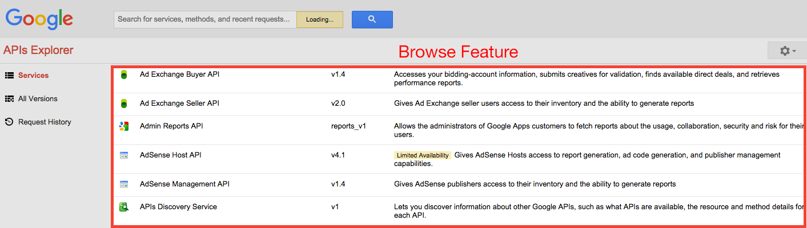
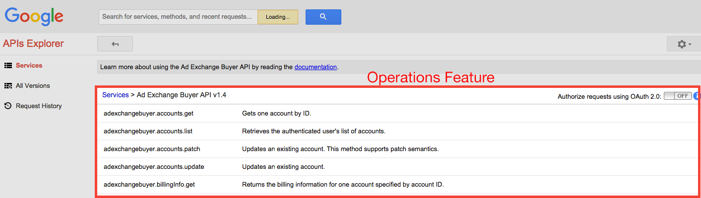

Building modular enterprise scale AngularJS applications
Overview
- Why?
-
Getting Started
- Design
- Implementation
- Testing
-
Extending
- Package
- Version
- Maintenance
- Future...
Why?
Why?
"The degree to which a system's components may be separated and recombined"
Why?
Expectations

Reality

Why?

Why?
AngularJS provides an MVVM framework. It does not natively include the capability to build scalable and maintainable software
Getting Started
Lets build a web app!
Simple Google like API explorer
Designing our app
 What are our steps?
- Structure
- Loading
- Code consistency
- Testing
Structuring Modules
AngularJS sample applications focus on grouping functionality
- Controller
- Services
- Views
- etc...
Great for getting started!
Structuring Components
LIFT [Style Y140]
- Locating our code is easy
- Identify code at a glance
- Flat structure as long as we can
- Try to stay DRY (Don’t Repeat Yourself) or T-DRY
Code
Loading Components
AngularJS module statements deal with bootstrapping
angular.module('app', ['app.foo', 'app.bar']);
Make it work like NodeJS using CommonJS syntax...with Browserify!
angular.module('app', [require('./foo'), require('./bar')]);
Code
Code consistency
- [Y001] - One component per file
- [Y020] - Avoid naming collisions
- [Y024] - Use named instead of anoynomous functions
- Just a small list, implement the John Papa code style guidelines
Code
Testing Components
Significantly easier as modules, lets dive right in!
Extending
Package
Isolate and package code as npm modules...sure why not?
Pull in other modules from a private npm registry...sure why not?
- Independently testable
- Supports multiple dev teams
- Independent build pipelines
- Common code can be shared among AngularJS projects
Version
npm packages can be versioned!
Independently versioned from main project
Maintenance
Small component features as npm modules
- Easier to find bugs
- Loosely coupled, lower impact when fixing issues
- No changes required to core project
- Supports seperation of maintenance and main dev teams